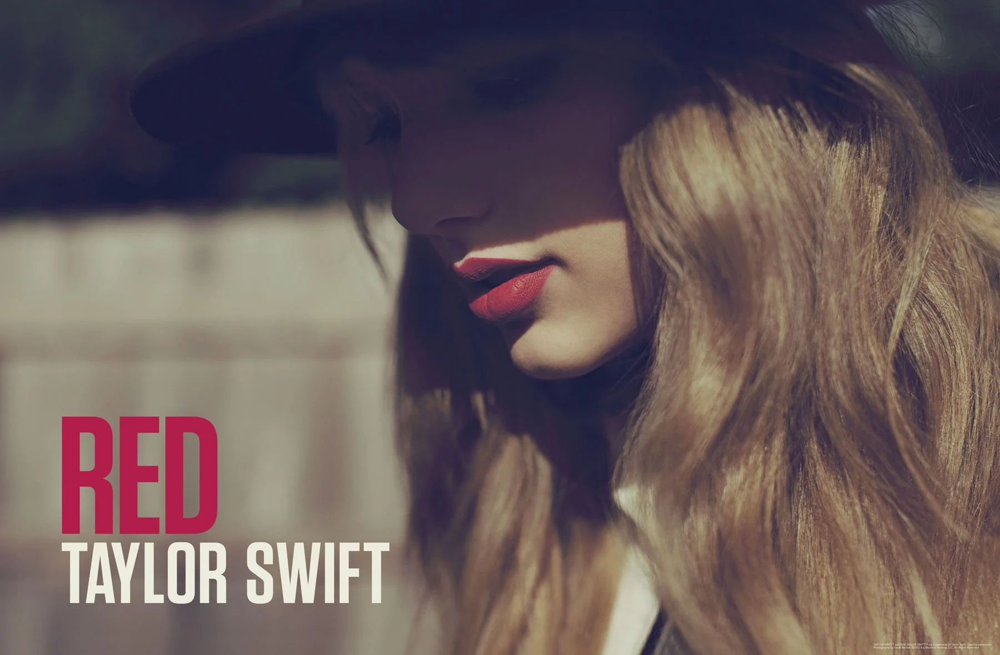
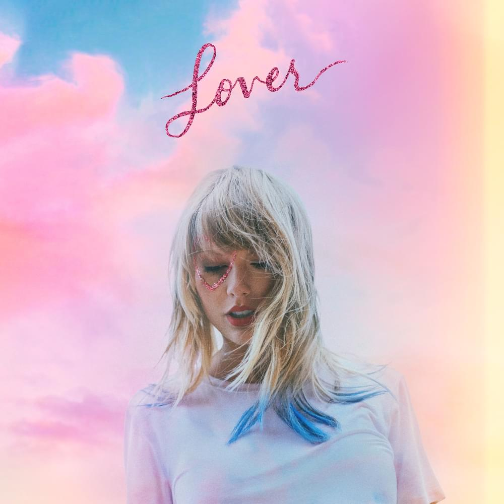
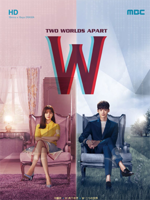
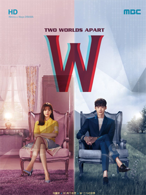

A true Reputation Era is about finding the people who like you for you.
It's the period when you finally begin to see yourself
the way those who actually love you do, not the people you wish loved you did

and passion and love and affection.And
then you have on the other side of the
spectrum,jealousy and anger and
frustration and you didn't call me back
and i need space,"she explains,before
adding with a faux teary huff,"i'm fine"

Confession: The song "Lover" has been stuck in my head since it came out in August 2019.
Not the entire song, but rather the way Swift croons the word "table" at 2:47.
When Swift sings about domestic bliss with her boyfriend,
it sounds like she means it—and it's this authenticity, combined with a haunting melody,
that turns "Lover" into such an iconic love song.
FAVORITE GAME


FAVORITE KDRAMA
 
 True Beauty W Two Worlds Apart
2020 2016